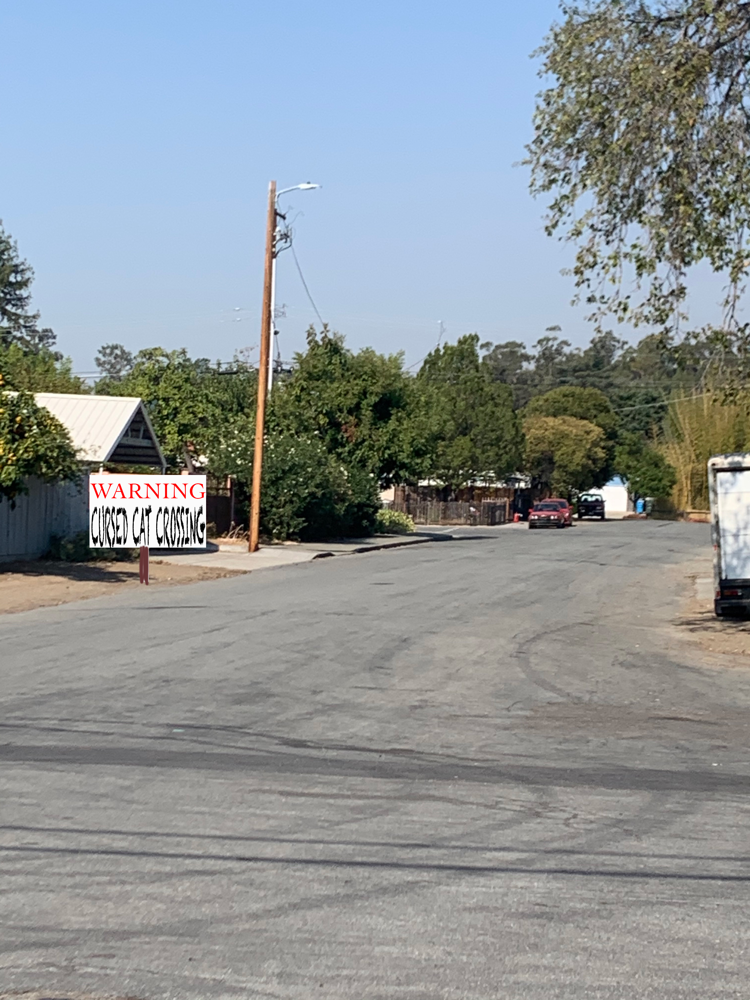
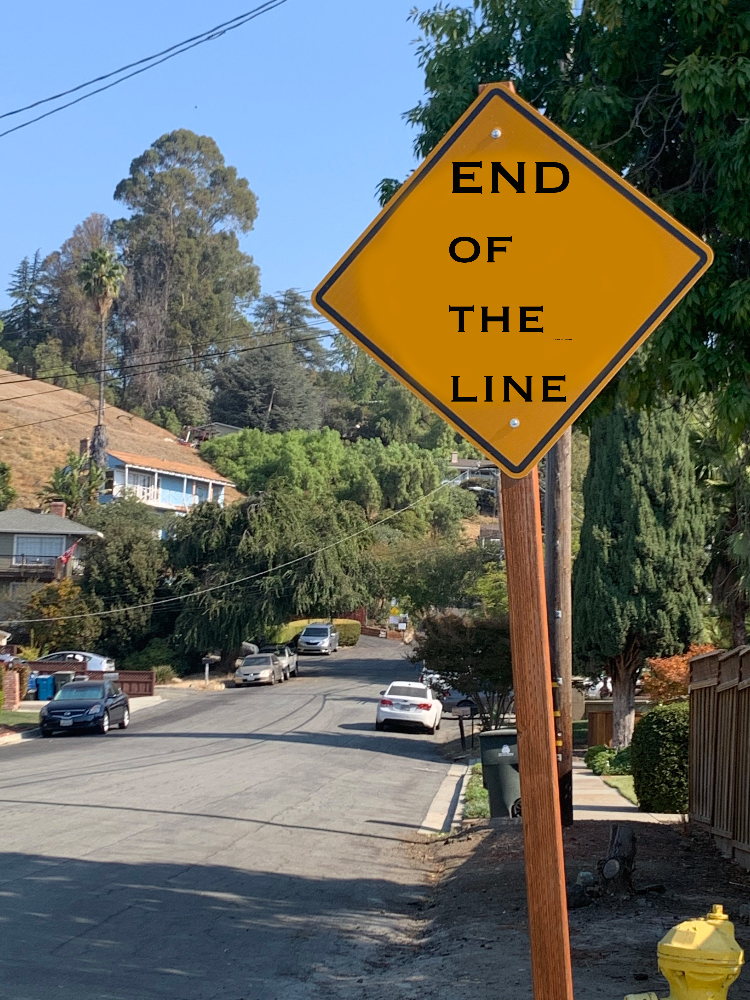
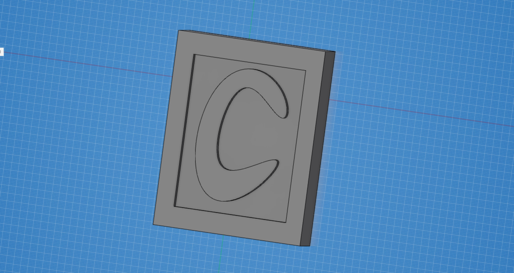
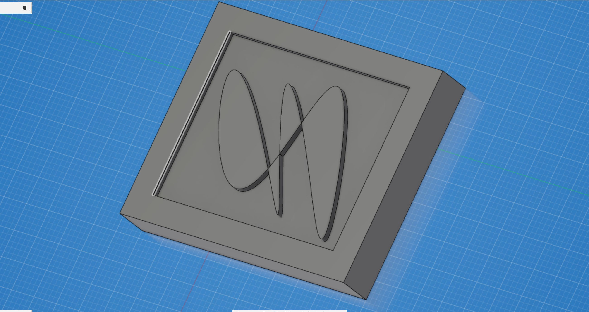

Assignment 4 : Signs
Sign Ideas
In these four concepts, i wanted to incorporate a playful sign that would fit into the scenery its inhabitated in.

Thsi idea came to me because during the pandemic, I noticed USPS has been really backed up and sometimes our mail would arrive very late in the night. This sign is to show the Mail workers tat they are appreciated and to thank them for thier hard work and service during these troubled times.
This idea was veery random. whenever I would come home from work, there would always be a black cat on side of the street. It's always there and very confident when standing its ground the the surrounding loud noises. Thso sign is tho playfully play with the idea that this cat is cursed that those who cross should be aware.

there is a hedge that stands in front of my home that is known for the neighborhood dogs do thier business. I made this sign, giving the advantage to the aniamls to use the restroom when they need.
there is a long road that leads up to no where. This sign said "not a through street" but I wanted to annouce there was nothing left beyond that point.
CAD
Stamp Ideas designed in Fusion 360
shape 1
 Fusion 360 live linkshape 2
 Fusion 360 live linkmock ups: I took a different approach to creating thes signs. As a mentioned previously, these signs are to be placed in thier apropriate locations where the sign makes sense. I decided to work with something playful and something to hopefully bring a little light to whats going on in our world. My idea is to have the viewer smile when they se these signs and also read the as functional works.
 Fusion 360 live link
Fusion 360 live link
 Fusion 360 live link
Fusion 360 live link
 Fusion 360 live link
Fusion 360 live link
 Fusion 360 live link
Fusion 360 live link
3D Renders
These renders demonstrate where these signs actually take place in our real world. I dfelrt these environments are best appropriated with these concepts.